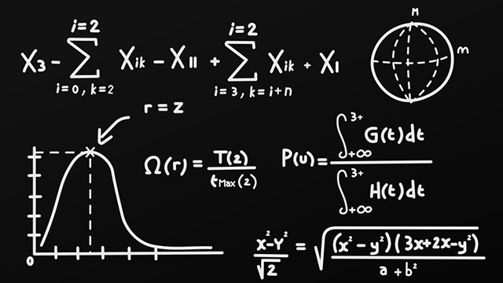
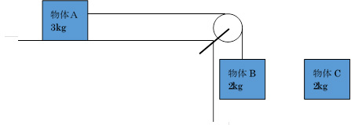
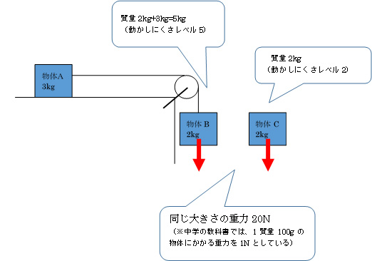
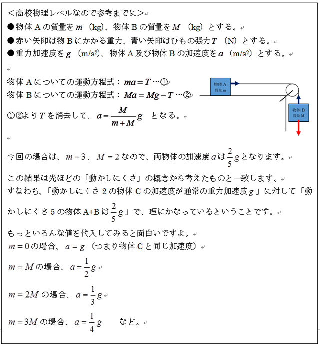

※本編と全く関係ありませんが、忘れないうちに言っておきます。前回ブログ（羽生くんになるために何個の肉まんを温めるべきか）で私のスペック欄にて「体重70kg（ぐらいにまでやせたと信じたい）」と記載しましたが、その後計ってみたところ69kgでした。夏には75kgありましたから6kg減ですね。ご報告まで。
あるお題
最近、職場にてちょっとした議論に発展した物理のお題がありますので紹介します。
それは私が作成した力学の問題なのですが、実際に議論したものはそれなりに複雑な設定だったので、ここでは議論の中心となったエッセンスだけを残して初歩的なものにしてみました。
（※ただし、摩擦や空気抵抗は無視できるものとします）ア：同じペースで加速し落下する。イ：物体Bの方が速いペースで加速し落下する。ウ：物体Cの方が速いペースで加速し落下する。エ：物体Bは加速せず一定の速さで落下し、物体Cは加速しながら落下する。オ：物体Bは落下せず、物体Cのみが加速し落下する。

さて、皆さんはどれになると思いますか？
少しでも力学の心得があれば、この問いは難しくはありません。
しかし、実はその‘心得がある’というところがクセモノでして、変に知識を持っていると見えなくなることがらもあるのです。
結論から言うと、正解は「ウ」です。
質量とは何か？
ここで、少し「質量」というものについて触れておきましょう。
これについてあまりに本質を掘り下げると頭がごちゃごちゃになりかねないので、今回の問いを理解するために必要な骨組みだけを話しますね。
質量の概念には２つあって、多くの人が抱いている物体の重さ的なイメージである「重力質量」と物体の動かしにくさのイメージである「慣性質量」があります。
物理学の世界では、この両者は同じものであるとしていますが、ここでは特に「慣性質量」という捉え方に注目してみます。
こんなことを想像してみて下さい。
アイススケートのリンクのようなツルッツルの床（つまり摩擦ゼロと想像して下さい）があります。
そこに、「横綱」と「赤ちゃん」を体育座りさせます。
リンクの外にいるあなたが左右『同じ力』で両者をポンッと押します。
そうすると両者ともに床を滑り出しますよね。
さて、滑って進むスピードは同じでしょうか？
さすがにそんなことはありません。
「赤ちゃん」はスーッと進んでいき、「横綱」はジワッ…と動き出しノロノロ進むはずです。
あくまで『同じ力』で押したならば、です。
なぜそのような結果になるのか。
その根本こそが「慣性質量」であり、「慣性質量＝動かしにくさの指標」だということです。
質量の大きいものほど動かしにくい。
これは誰もが体感的に知っていることで、もっと俯瞰的な見方をするならばいろんなことが腑に落ちてきます。
先ほどの横綱と赤ちゃんにまた登場してもらいます。
二人が宇宙ステーションのような無重力の環境にいるとします。
彼らはじゃれあいながら押し相撲をします。
お互いが手のひらを合わせ、相手を押し出したとしたら、互いに後方にはじかれますが、さすがに赤ちゃんの方が大きく吹っ飛ばされることでしょう。
横綱の方が質量が大きく‘動かされにくい’からです。
このことが成り立たず、横綱も赤ちゃんも同じ幅で吹っ飛ぶのだとしたら世の中は大変です。
もっと大きな規模で考えたとき、例えばあなたが地上でジャンプしたなら、宇宙から眺めていた人は、『あなたと地球の押し相撲は互角の勝負で、もとの位置から同じ幅で移動した』という様子が見え、ビックリ仰天です。
さらには一定時間内に数えきれないほどの人が地球を蹴るわけですから、そんな物理法則ならば地球はひっきりなしにボンボン跳ね返るボールのようになってしまいます。
え？ どうでもいいけど、なぜ横綱と赤ちゃんを例にするのかって？
単にその例で話すと生徒たちにウケるんで（笑）。
知っていることの皮肉な弊害
さて、お題の話に戻します。
物体Bと物体Cはともに2kgの質量なので、地球が真下に引っ張る重力はともに同じです。
しかし、物体Bの方は単独行動ではありません。
常に質量3kgの物体を引き連れながら落下しなければなりません。

つまり、物体Bの実態は「動かしにくさレベルが5」であるのに対して、物体Cは「動かしにくさレベルが2」なのです。
それらを「同じ力」で引っ張る。
これはまさにアイススケートリンクで横綱と赤ちゃんを同等の力で押したときと同じ構図なのです。
（※物体Aを地球が引っ張る重力は下向きで、これは床が支えてしまっているため物体Bが加速することのアシストにはならない）
そして、同じ力で引き続けるならば動かしやすい物体の方が加速の度合いが大きくなりますから、物体Cの方がどんどん落下していくことになります。
ということで、単に質量のイメージさえ持っていたらそのように考えられるのですが、下手に知識を持っていると、変に理屈のみでゴリ押ししようとします。
「え～と、摩擦がゼロだから、理論上は物体Aを引く力はゼロだよな」
「ということは、ひもは物体Bを上向きに引っ張らないよな」
「よし、どちらも同じように落下するから答えは‘ア’だ」
「いやいや、ちょっと待て。運動方程式を立てて計算するから！」
「う～ん。あれ？ 出た結論が選択肢にないぞ！」
みたいなことによくなったりします。
（※ちなみに正しく運動方程式を立てて計算すると以下のようになります。せっかくなので、いろいろな物体の質量がいろいろな数値をとれるように一般性を持たせてみました）

ちなみに、うちのHP支配人（完全な文系人間）にも考えてもらったところ、まさに質量の概念だけで正解を選ぶことができていました。
下手に知識を持っている場合、それを正しく使えないと変な方向に行ってしまうことがよくあります。
しかし余計な知識がなく、軸となる基本概念だけで正しい方向に思考が行く場合もあり、これはとても面白いなと感じますね。
＜付録：別解～エネルギーの概念から＞
力学的エネルギー保存の法則（位置エネルギー＋運動エネルギー＝一定）から今回のお題を考えることもできます。
物体Cが落下すると…「物体Cの位置エネルギーが減った分」は「物体Cの運動エネルギー」になる。
物体Bが落下すると…「物体Bの位置エネルギーが減った分」は「物体Bの運動エネルギー」＋「物体Aの運動エネルギー」になる。
質量が等しい物体Bと物体Cが、同じ位置まで落下したときのことを考えると、常に物体Aにもエネルギーを分け与えなければならない物体Bの方が速さは遅いということになる。
よって、正解は「ウ」となる。